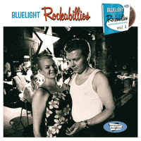

VA - Bluelight Rockabillies, Vol. 1 (Compilation, 2015)
Rock-Ola (and the Freewheelers):
01 - Rubberneckin' (2:47)
Whistle Bait:
02 - Everloving Man (2:42)
Bone Fed Dogs:
03 - Long Black Train (3:04)
Nightriders:
04 - Blue Ribbon Baby (2:22)
the Dell-Tones:
05 - Strangers When We Meet (2:18)
Hal Peters and his String Dusters:
06 - Careless Words (2:09)
Rock-Ola:
07 - I'm Ready (2:09)
Bellshots:
08 - Drowning All My Sorrows (1:51)
Boppin' Pete 3:
09 - Jellybean (2:17)
the Slippers:
10 - Cat Talkin' (3:12)
the Crackerjacks:
11 - Where The Rio De Rosa Flows (3:02)
Less Misfits:
12 - Joanne (4:45)
Eero Raittinen:
13 - Carol (3:39)
Francine:
14 - She's Dynamite (2:57)
Stringbeans:
15 - Hold Me Baby (2:57)
Red Hot:
16 - Baby Goodbye (3:37)
Whistle Bait:
17 - She Loved Everybody But Me (2:21)
the Fleabrain:
18 - Don't Talk Me No More (2:21)
Jussi Syren Rockabilly Revival:
19 - One Step Ahead Of Trouble (2:12)
Rock-Ola:
20 - Big Fool (2:28)
Keystone Cops:
21 - If You Can't Set My Heart (feat. Johnny Blue) (3:33)
Aikka Hakala:
22 - His Latest Flame (2:21)
Less Misfits:
23 - Life's Fine (3:12)
the Rock 'n' Roll Group:
24 - Rock The Joint (2:01)
Rollovers:
25 - Cradle Of Love (2:30)
Francine:
26 - Annie (2:54)
Whistle Bait:
27 - Girl Next Door (2:44)
Rock-Ola (and the Freewheelers):
28 - Remember Me (4:15)
© Bluelight Records :: [BLR 33154 2]
Notes
Review
348/366 (Project 366)
Absolutely charming and beautiful. Modern Rockabilly compilation with a very specific Rock'n'Roll tone of bands from Finland. So top-notch songs, their own and covers, are just so great. Very sweet groove, very musicianship, very mighty, very energetic, very melodious, very rockin'!
Chicness of melody, dreaminess and tonality combined with a rather powerful and vigorous accompaniment is felt in all three songs of Whistle Bait on the compilation. Elegancy of vocals will be remembered almost forever after the first listening. Especially with "Everloving Man", whereas "She Loved Everybody But Me" is more fruity in addition, and "Girl Next Door" is a much more groovy and deliberately stylish song. Less Misfits adds a languid sensation with their songs, keeping all the gallantry of the vocalist. More related to the slightly neon "Joanne", since "Life's Fine" is more nostalgic and dreamy as such. All of this is more Modern Rockabilly and general Rock'n'Roll. This also applies to the songs "Cradle Of Love" by Rollovers (completely adorable one!) and "Baby Goodbye" by Red Hot (so light! so soft about heavy things). Rock-Ola adds grace and Rockers power. Four songs, two of which are backed by the Freewheelers. Although "Rubberneckin'" and "Big Fool" are pretty good songs with its a bit more Modern Rockabilly way, I am totally impressed with the cover versions of "I'm Ready" (great countrified Rockabilly is still great with this buoyant look) and "Remember Me" as a somewhat Country Rock ballad. This kind of countrified General Rock (but with more Folk touches) is present in the song "His Latest Flame" by Aikka Hakala. Where is so fine acoustic vibe. Can't compare to the slightly frenzied sound of "Carol" by Eero Raittinen, with its sleazy guitars, late honky tonk vibe and general rockin' and rollin'. The composition "Cat Talkin'" by the Slippers also stands out. Fancy one and tuny. But more authentic things like "If You Can't Set My Heart" by Keystone Cops sound much more interesting. So rustic, even Hilbilly a bit. Great and according to the classics. "Careless Words" by Hal Peters and his String Dusters bring some more authentic moods, countrified and rustic tones with highly swingin' vibe. And the Rock 'n' Roll Group with its cover of "Rock The Joint" is awesome authentic rockin' and rollin'.
Also some psycho, gruff and wild bits exist on the tracklist. Boppin' Pete 3 with "Jellybean" is so mad and bogey (but fine and with fun), Stringbeans with "Hold Be Mad" is about classic "psychobilly" stroll-a-ballad, the Crackerjacks and their retelling of "Where The Rio De Rosa Flows" is so nicely raw and punchy. Of course, Francine with their Alternative way of Rock'n'Roll and Modern Rockabilly is a smashing. "She's Dynamite" and "Annie" - uncompromising flow of power and neatness. Nightriders with "Blue Ribbon Baby" is no less dynamic, but more nostalgic and jivin'.
Brilliant way to introduce the wide and modern look of Rockabilly is the rest of the songs. They are more classic Rockabilly, but each track presents different sides of it and reveals the specifics of the band. Bellshots with "Drowning All My Sorrows" (stunning cover, actually), Bone Fed Dogs with "Long Black Train" (so modish), Jussi Syren Rockabilly Revival with "One Step Ahead Of Trouble" (so tasty), the Dell-Tones with "Strangers When We Meet" (so smooth) and the Fleabrain with "Don't Talk Me No More" (so artistry). Classy songs, like the compilation itself. Of course, this does not reflect the whole picture of the Rockabilly / Rock'n'Roll scene in Finland. But in principle, it describes a rather significant modern part of it, and even somewhat characteristic. And certainly shows some of the main artists of the Bluelight Records Label. For the first volume, these are really accurately chosen astounding bands.